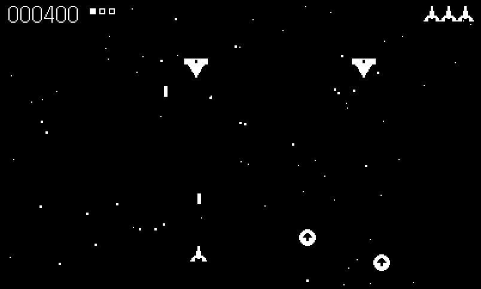
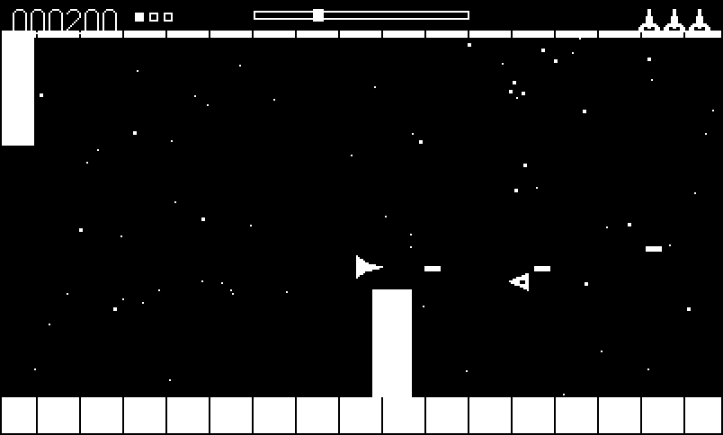
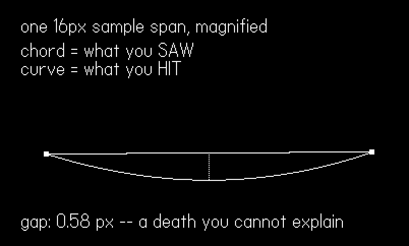
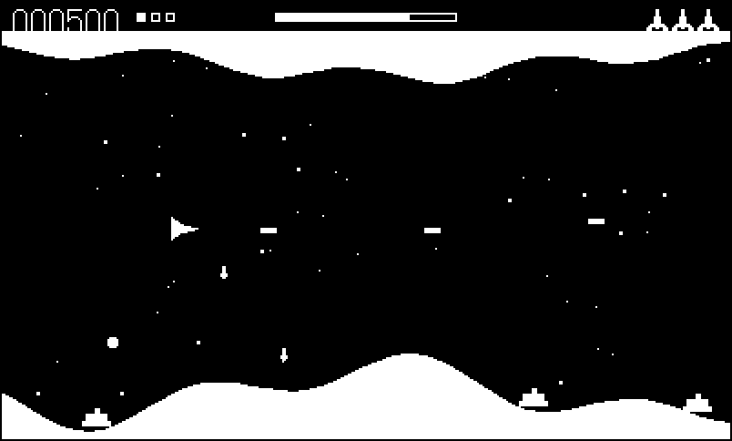
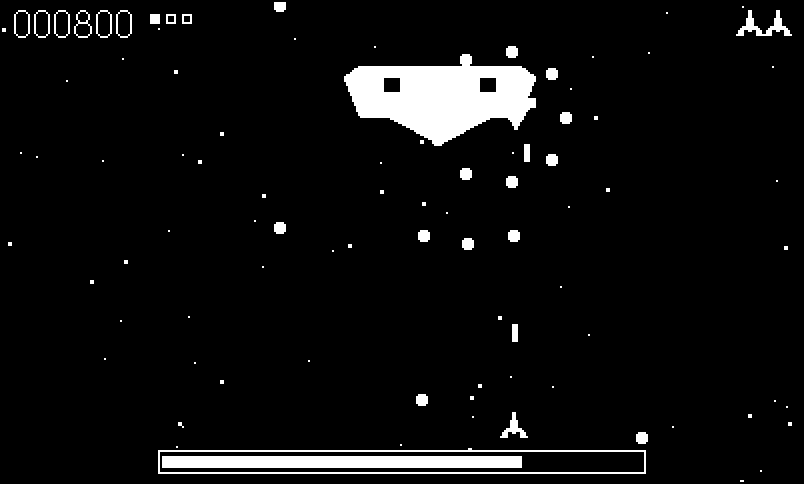

26 Inside Shmup: A Frame of Reference
Every engine in this part answers the same question, and answers it differently. Phosphor says the world is made of lines (Chapter 21). Tiles says it is made of the grid (Chapter 22). Voxel says volume (Chapter 23), Dither says shade (Chapter 24), Lore says story state over a world (Chapter 25). Five packages, five representations; each thesis is a claim about what the world is made of, and everything else — the modules, the cost model, the admission test for what games belong — falls out of it.
Now ask that question about a shoot-’em-up. What is a shmup made of? Sprites, bullets, and a scrolling background. That is a true answer and a useless one, and it is useless because it is the wrong question. Line up the landmarks of the genre and what actually differs between them is not the substance. Xevious and Tyrian scroll a world past a player who is welded to the screen. Scramble and Defender scroll it past you at a rate you are not allowed to change. Uridium does not scroll at all: its level is a fixed place with two ends, and the camera chases you through it. A grunt that dives at you does not care which of those three it is diving through. Neither does a bullet, a pool, a collision test, a wave script, or the score. The difference — the whole difference — is what is nailed down and what moves:
| Game | The world | The player | The camera |
|---|---|---|---|
| Xevious, Tyrian | scrolls past, forever | locked to the screen | fixed |
| Scramble, Defender | scrolls past at a rate you cannot change | locked to the screen | fixed |
| Uridium | is a fixed place with two ends | flies through it | chases the player |
So the sixth engine’s thesis is not a representation at all. It is a frame of reference: core/frame.lua owns exactly four questions — where frame coordinates land on the screen, how the world advances, where the player is allowed to be, and which way is forward — and nothing else in core/ is allowed to answer them. Choosing a frame is one string in a game’s content table. Everything else is written once, against the frame, and works in all three.
The example, 26-shmup, is an engine tour in the format of its five siblings: sixteen core modules vendored verbatim (each carries a one-line provenance header; the code is otherwise untouched) under a demo that plays three levels back to back on one engine — a vertical shooter, a side-scrolling cave, a free-roaming hull run — and then draws a diagram of the bug that this chapter is really about. Every engine listing below is extracted from those vendored files, so the prose and the shipped code cannot drift apart.
-- the vendored engine, in dependency order
import "lib"
import "frame"
import "kit"
import "snd"
import "music"
import "fx"
import "sprites"
import "stars"
import "terrain"
import "bullets"
import "enemies"
import "power"
import "boss"
import "player"
import "waves"
import "shmup"
-- the demo
import "demo"26.1 The four questions
Read frame.lua as a specification and the engine writes itself. The first three questions are eleven lines of code:
-- ---- 1. the transform ----
-- In free mode this is all that stands between a world coordinate and a pixel.
-- In the scrollers it is the identity, and the branch predicts.
function Frame.toScreenX(x) return Frame.free and x - Frame.x or x end
function Frame.toScreenY(y) return y end
-- ---- 2. the advance ----
function Frame.advance(dt, px)
if Frame.free then
Frame.x = Lib.clamp(px - SCREEN_W / 2, 0,
math.max(0, Frame.levelW - SCREEN_W))
else
Frame.scroll = Frame.scroll + Frame.speed * dt
end
end
-- ---- 3. the player's box ----
function Frame.bounds()
if Frame.free then
return 12, Frame.levelW - 12, Frame.top, Frame.bottom
end
return 8, SCREEN_W - 8, Frame.top, Frame.bottom
endEvery entity in the engine — player, bullet, enemy, boss, power-up, explosion — lives in frame coordinates, and every draw routes through Frame.toScreenX. In vertical and side that transform is the identity, so the scrollers pay nothing at all for the abstraction: the cost is a branch on a local that predicts perfectly. In free it is a subtraction of the camera, which is Chapter 7’s setDrawOffset argument moved one level down — the engine does not offset the drawing context, it offsets the coordinates, because bullets and collision need the same transform and a draw offset does not give it to them.
The temptation the engine had to resist is worth naming, because it is what the previous version did: let each paradigm use whatever coordinates are convenient — screen coordinates for the scrollers (the world is only ever the screen, after all) and world coordinates for the free camera. That is exactly how a shared engine drifts apart into two engines that look alike.
Frame.advance is the second question, and note what it does not do in free mode: it does not move the world. It moves the camera, clamped to the level, centred on the player. Nothing else in the engine knows the difference, because the transform absorbs it.
The fourth question is the one that turns a fixed shooter into a Uridium:
-- ---- 4. forward ----
-- The scrollers have a fixed forward. Free mode does not: the ship turns
-- around, so forward is the player's facing and the sprite flips to match.
function Frame.fireDir(facing)
if Frame.free then return facing or 1, 0 end
if Frame.horizontal then return 1, 0 end
return 0, -1
end
function Frame.flips() return Frame.free endA scroller’s forward is a constant. The free frame’s ship turns around, so forward is the player’s facing, and the sprite flips to match (Frame.flips). This is why the weapon ladder in bullets.lua is written once for all three frames: Bullets.playerFire asks the frame for (dx, dy), takes the perpendicular (-dy, dx), and lays the twin shot and the angled pair along those axes. Level 3 in a vertical game fans left-and-right; in a side game it fans up-and-down; in the free frame it fans up-and-down and fires backwards when you do. Nobody wrote three versions.
Enemies get the same treatment in reverse. Frame.enemyAngle returns \(\pi\) in a horizontal frame and \(\pi/2\) in a vertical one — the direction the player is coming from — and Bullets.eSpread defaults its centre angle to it. The old Firers.spread hardcoded \(\pi/2\), with the result that a spread enemy in a side-scroller dutifully hosed the floor. When a constant in a shared module encodes an assumption about the game, the module is not shared; it is copied and not yet diverged.

stars.lua asks the frame which way is down.
26.1.1 Spent and culled are not the same question
Now the pair of predicates that look like duplicates and are not:
-- Two questions that are easy to conflate, and expensive to conflate.
-- SPENT: this projectile can never matter again. Measured against the visible
-- box, because a bullet exists only to reach something you can see.
function Frame.spent(x, y)
local m = Lib.KILL_MARGIN
local sx = Frame.toScreenX(x)
return sx < -m or sx > SCREEN_W + m or y < -m or y > SCREEN_H + m
end
-- CULL: this enemy should stop existing. In the scrollers, leaving the screen
-- means leaving the game -- the world behind you is gone forever. In free mode
-- the level is a PLACE: its defenders are still standing there when you fly
-- back, so nothing is culled for being off-camera. Cull on camera in free mode
-- and the level quietly empties out behind the player.
function Frame.cull(x, y)
if Frame.free then return false end
local m = Lib.KILL_MARGIN
return x < -m or x > SCREEN_W + m or y < -m or y > SCREEN_H + m
endA bullet is spent when it can never matter again, and it is measured against the visible box, because a bullet exists only to reach something you can see. An enemy is culled when it should stop existing — and in the free frame nothing is ever culled, because the level is a place. Its defenders were standing at their posts before you arrived and they are still standing there when you fly back past them. Cull on the camera in free mode and the level quietly empties out behind the player: fly right for four seconds, turn around, and the world you just fought through is gone. No error, no counter, no crash — just a level that erases itself while your back is turned.
Note that Frame.spent uses toScreenX and Frame.cull does not. That is not an oversight. A bullet’s relevance is a question about the screen; an enemy’s existence is a question about the world, and in the scrollers those two happen to coincide because the world is the screen. Conflating them costs you nothing until the day you add a frame where they differ, and then it costs you the frame.
26.2 A game is a content table
With the frame owning the paradigm, a game has nothing structural left to write. It hands Shmup.new a Content table — a title, a scroll mode, an art hook, an enemy dictionary, a boss dictionary, a wave script, optional terrain, an optional static scene, an optional fuel gauge, a music track — and the engine does the rest. Here are the example’s three levels, and the argument of this chapter is that you can read the first four lines of each and stop:
-- Three levels. Read the first four lines of each and nothing else: the frame
-- is the only real difference between a Xevious, a Scramble and a Uridium.
local VERTICAL = {
title = "VERTICAL",
scroll = "vertical", -- the world falls past a fixed player
sprites = art,
enemies = {
grunt = { sprite = "grunt", hp = 1, r = 6, score = 100,
move = Movers.straight(78), drop = { "gun", 0.5 } },
gunner = { sprite = "gunner", hp = 3, r = 9, score = 300,
move = Movers.dropHover(56, 55, 44, 1.2),
fire = Firers.spread(1.9, 3, 0.7, 115) },
},
bosses = {
dread = {
sprite = "dread", hp = 40, r = 26, score = 5000,
from = { x = 200, y = -30 }, enter = { x = 200, y = 50 },
phases = { {
above = 0,
move = function(b) b.x = 200 + math.sin(b.t) * 96 end,
fire = function(b, dt)
local d = b.data
d.t = (d.t or 0) + dt
if d.t >= 1.3 then
d.t = 0
Bullets.eRing(b.x, b.y + 8, 9, 100)
end
end,
} },
},
},
waves = {
{ t = 0.5, type = "grunt", x = 70, n = 5, dx = 62 },
{ t = 3.0, type = "gunner", x = 130 },
{ t = 3.0, type = "gunner", x = 270 },
{ t = 6.0, type = "grunt", x = 40, n = 6, dx = 64 },
{ t = 9.0, boss = "dread" },
},
}
local SIDE = {
title = "SIDE",
scroll = "side", -- the world slides left, at ITS pace
speed = 66, -- ...this fast, and you cannot argue
fuel = true,
sprites = art,
terrain = { groundBase = SCREEN_H - 26, groundAmp = 22,
ceilBase = 34, ceilAmp = 12 },
enemies = {
tank = { sprite = "tank", hp = 2, r = 8, score = 200, fuel = 40,
move = Movers.groundLeft(7) }, -- rides at Frame.speed
ufo = { sprite = "ufo", hp = 1, r = 7, score = 250,
move = Movers.leftSine(130, 42, 2.4),
fire = Firers.aimed(1.8, 120) },
},
waves = {
{ t = 0.5, type = "ufo", x = 420, y = 70 },
{ t = 2.0, type = "tank", x = 420, y = 200 },
{ t = 4.0, type = "ufo", x = 420, y = 110, n = 3, dy = -26 },
{ t = 7.0, type = "tank", x = 420, y = 200, n = 2, dx = -90 },
{ t = 10.0, type = "ufo", x = 420, y = 90, n = 4, dy = 20 },
},
}
local FREE = {
title = "FREE",
scroll = "free", -- the world stands still. YOU move.
levelW = 1800, -- ...and it has two ends
top = HULL_T + 8, bottom = HULL_B - 8,
sprites = art,
scene = HULL_SCENE,
enemies = {
defender = { sprite = "defender", hp = 1, r = 6, score = 200,
move = Movers.station(26, 2.2),
fire = Firers.aimedNear(1.9, 130, 220) },
},
waves = {
{ t = 0, type = "defender", x = 520, y = 90 },
{ t = 0, type = "defender", x = 700, y = 170 },
{ t = 0, type = "defender", x = 940, y = 100 },
{ t = 0, type = "defender", x = 1180, y = 160 },
{ t = 0, type = "defender", x = 1420, y = 110 },
},
}scroll = "vertical", scroll = "side" with a speed, scroll = "free" with a levelW. Everything else is furniture. Enemy types are data that compose exactly one Movers.* and one Firers.* closure — Movers.sine(120, 55, 3.0) for a darter, Movers.groundLeft(7) for a tank that rides the scrolling terrain, Movers.station(26, 2.2) for a defender bobbing on its post, Firers.aimedNear(1.9, 130, 220) for one that only shoots when you are actually within reach. A game never writes an update loop for an enemy, because there is only one enemy update loop and it is in enemies.lua.
A wave script is a spawn timeline, drained in order:
local function ready(w)
if w.at then return Player.x >= w.at end
return (w.t or 0) <= Waves.t
end
function Waves.update(dt)
if Waves.done then return end
Waves.t = Waves.t + dt
local s = Waves.script
while Waves.i <= #s and ready(s[Waves.i]) do
local w = s[Waves.i]
if w.boss then
Boss.arm(w.boss, w.x, w.y)
else
local n = w.n or 1
local dx, dy = w.dx or 0, w.dy or 0
local bx, by = w.x or (SCREEN_W / 2), w.y or -16
for k = 0, n - 1 do
Enemies.spawn(w.type, bx + dx * k, by + dy * k)
end
end
Waves.i = Waves.i + 1
end
if Waves.i > #s then Waves.done = true end
endLook at ready. There are two triggers, t and at, and the reason both exist is the frame again. In a scroller the world comes to you at a fixed rate, so a time is a distance and a clock is the only sensible index into a level. In the free frame the world does not move at all — you may hover, or fly backwards — so a clock indexes nothing, and the only honest trigger is where the player actually is. Skimmer’s whole level is placed at t = 0 and its boss is armed by position:
-- shmup/games/skimmer/content.lua:175
-- The whole level, placed at t = 0: it is a place, and all of it is there
-- before you arrive. The boss alone is triggered by WHERE you are.
waves = {
{ t = 0, type = "defender", x = 420, y = 90 },
{ t = 0, type = "defender", x = 560, y = 170 },
{ t = 0, type = "sentry", x = 700, y = 120 },
{ t = 0, type = "defender", x = 860, y = 70 },…and, at the bottom of that list, { at = 1900, boss = "core" }: the reactor is bolted to the far end of the ship and has been there the whole time. You are the one who arrives.

26.2.1 The war story: an engine with two and a half pillars
That tidiness is retrofitted, and the retrofit is the reason this chapter exists. The previous version of the engine advertised three scroll paradigms and shipped two. camera.lua was twenty-two lines. And Skimmer — the game that was supposed to prove the third — was games/skimmer/game.lua, 244 lines that reimplemented the player, the bullets, the enemies, the collision, the HUD and the state machine, sitting beside the engine rather than on it. Not because its author was lazy: because the engine’s modules were written in screen coordinates and Skimmer needed world coordinates, so not one of them could be reused.
Making the frame explicit deleted all 244 lines. Skimmer is now a content table like the other two, and its main.lua is imports, an autopilot, and one call to Shmup.run. The lesson generalizes past shmups: an engine whose third pillar is a copy-paste of the first two does not have three pillars. If a feature of your engine can only be demonstrated by a game that bypasses your engine, you have not built the feature — you have written its documentation.
The same rot shows up in miniature, and the miniature is easier to catch. Ravine’s content file used to open with a constant called TSPEED and a comment explaining that it must match the terrain’s scroll speed or the ground units would slide along the cavern floor as if on ice. Two numbers, one truth, kept in sync by a comment addressed to a future human. Now there is one number — Frame.speed, stated once in the content table — and Movers.groundLeft reads it. Comments do not keep numbers in sync.
26.3 The terrain bug
Here is the bug that justifies the whole rewrite, and it is the best thing this engine has to teach.
Ravine’s cavern was drawn as a polygon sampled every 16 pixels — a chain of straight chords — and collided against the exact, continuous sine that generated it. Those are not the same curve. Between samples the true curve bows away from the chord, so the wall you saw was not the wall you hit: near a crest the ship died in visibly empty black; in a trough it flew through white pixels.
The magnitude of the error is what makes it poison. At the worst point of Ravine’s profile the chord strays under a pixel from the curve it is pretending to be. It is invisible in a screenshot. It will never move a counter. It cannot be reproduced on demand, because it only bites when you happen to be flying through the fat part of a chord. And it is absolutely felt — as the occasional unfair death that the player cannot explain, in a genre where the player’s entire relationship with the game is trusting that the black pixels are safe.
The fix is a rule, and the rule is blunt: there is one profile, it is sampled, and the renderer and the collider both read the same samples.
-- Rebuild the profile for the frame's current scroll: 51 samples, once a frame.
function Terrain.sample()
local scroll = Frame.scroll
for i = 1, N do
local wx = scroll + (i - 1) * STEP
gy[i] = genGround(wx)
cy[i] = genCeil(wx)
end
endTerrain.sample runs once a frame and fills two arrays — 51 samples at 8-pixel spacing across the screen. Terrain.draw builds its two filled polygons out of those arrays and nothing else. And the collider reads them the way the renderer draws them, by linear interpolation within the samples:
-- Read the profile the way the renderer draws it: lerp between samples.
local function lerpAt(prof, sx)
local t = sx / STEP
local i = math.floor(t) + 1
if i < 1 then return prof[1] elseif i >= N then return prof[N] end
return Lib.lerp(prof[i], prof[i + 1], t - (i - 1))
end
function Terrain.groundY(sx) return lerpAt(gy, sx) end
function Terrain.ceilY(sx) return lerpAt(cy, sx) end
function Terrain.hits(x, y, r)
return (y + r >= lerpAt(gy, x)) or (y - r <= lerpAt(cy, x))
endlerpAt is the whole fix. It is the same straight line between sample \(i\) and sample \(i+1\) that fillPolygon rasterizes, evaluated analytically instead of in pixels. The generator functions genGround and genCeil still exist — something has to produce the samples — but they are file-local and called from exactly one place, Terrain.sample, with a comment saying so. Coarsen STEP and both halves coarsen together; refine it and both halves refine. They cannot disagree, because there is no second source of truth for them to disagree about.
Any time a shape is drawn one way and collided another, you have two sources of truth, and they will disagree. The disagreement is usually sub-pixel, which is why this class of bug survives review: it never looks wrong, it only ever feels wrong. A circle drawn with drawCircleAtPoint and hit-tested with a radius is fine — those are the same shape. A sprite drawn from an image and hit-tested against a hand-typed rectangle is not: the day someone nudges the art two pixels, the hitbox stays where it was and nobody notices for a month. Derive one from the other, or derive both from a third thing. Never maintain two.
The demo’s last phase is that argument with a receipt attached. It cannot show you the bug at 1:1 — at 1:1 the two curves are the same line, which is the entire problem — so it magnifies one sample span:
-- The bug, magnified. The cavern used to be DRAWN as a polygon sampled every
-- 16 px and COLLIDED against the exact continuous sine that generated it. Those
-- are not the same curve: between samples the true curve bows away from the
-- straight chord, so the wall you saw was not the wall you hit.
--
-- At 1:1 the gap is under a pixel, which is why nobody caught it by looking --
-- and why the ship just occasionally died in visibly empty black. Here the
-- vertical axis is stretched so you can see what the ship could feel.
local STEP_OLD <const> = 16 -- the old draw sampled the wall this coarsely
local MAGX <const> = 20
local MAGY <const> = 46
local function curve(x) -- the same generator core/terrain.lua samples
return 120 - 22 * (0.6 * math.sin(x * 0.020) + 0.4 * math.sin(x * 0.052 + 1.3))
end
function Demo.drawProfile()
gfx.clear(gfx.kColorBlack)
gfx.setColor(gfx.kColorWhite)
-- Zoom in on ONE 16px span -- the crest where the wall bends hardest, since
-- that is where a chord strays furthest from the curve it is pretending to
-- be. Showing the whole wall would show nothing: at 1:1 the two lines are
-- the same line. That is the entire problem with this class of bug.
local x0, flat = 0, 1e9
for x = 0, 400 do
local slope = math.abs(curve(x + 9) - curve(x + 7))
if slope < flat then flat, x0 = slope, x end
end
local ox, oy = 44, 150
local base = curve(x0)
local function px(x) return ox + (x - x0) * MAGX end
local function py(x) return oy + (curve(x) - base) * MAGY end
-- what the COLLIDER read: the true curve, at every pixel
for i = 0, STEP_OLD * MAGX do
gfx.drawPixel(ox + i, py(x0 + i / MAGX))
end
-- what the RENDERER drew: one straight chord between the two samples
gfx.setLineWidth(1)
gfx.drawLine(px(x0), py(x0), px(x0 + STEP_OLD), py(x0 + STEP_OLD))
gfx.fillRect(px(x0) - 2, py(x0) - 2, 5, 5)
gfx.fillRect(px(x0 + STEP_OLD) - 2, py(x0 + STEP_OLD) - 2, 5, 5)
-- the gap between them, at its widest
local mid = x0 + STEP_OLD / 2
local chordY = (py(x0) + py(x0 + STEP_OLD)) / 2
local trueY = py(mid)
for y = math.min(chordY, trueY), math.max(chordY, trueY), 2 do
gfx.drawPixel(px(mid), y)
end
local gap = math.abs(curve(mid) - (curve(x0) + curve(x0 + STEP_OLD)) / 2)
Kit.text("one 16px sample span, magnified", 20, 16)
Kit.text("chord = what you SAW", 20, 40)
Kit.text("curve = what you HIT", 20, 58)
Kit.text(string.format("gap: %.2f px -- a death you cannot explain",
gap), 20, 208)
endThe span it picks is the flattest one, found by scanning for the minimum slope, because a flat span is a crest or a trough and that is where a chord strays furthest from the curve it approximates. The dotted column down the middle is the disagreement at its widest:


Frame.speed, and the fuel gauge that makes the dumps worth bombing. The HUD sits on a black plate because white text on a white cavern wall is not text.
26.4 Pools that actually pool
lib.lua has a fixed-capacity pool with swap-remove: preallocate the slots, hand out cleared ones, compact the dead out in place. Chapter 19 made the case for it and Chapter 15 used it for particles. The engine had one, and it had the bug that makes owning one pointless.
Enemies.spawn used to end with e.data = {}.
That is a fresh table for every enemy that ever spawns — the exact allocation the pool exists to avoid, reintroduced one line below the pool that avoids it. A bullet-hell frame with forty spawns is forty tables for the collector to find later, and the pause it eventually takes will land in the middle of a boss. The fix is in the pool, where it belongs:
-- The slot's `data` sub-table (scratch space for movement behaviours) is
-- cleared IN PLACE and handed back, never reallocated. A pool that allocates a
-- table per spawn is not a pool, it is a table factory with extra steps -- and
-- the collector comes for that garbage in the middle of a boss fight.
Pool = {}
Pool.__index = Pool
function Pool.new(capacity)
local p = setmetatable({ n = 0, cap = capacity, items = {} }, Pool)
for i = 1, capacity do p.items[i] = { data = {} } end
return p
end
function Pool:spawn()
if self.n >= self.cap then return nil end
self.n = self.n + 1
local e = self.items[self.n]
local d = e.data
for k in pairs(e) do e[k] = nil end
for k in pairs(d) do d[k] = nil end
e.data = d
e.dead = false
return e
endThe slot’s data sub-table — scratch space for the movement behaviours, where Movers.sine keeps its x0 and Movers.patrol keeps its dir — is cleared in place and handed back. After the first pass through the pool, spawning allocates nothing, forever.
The general shape of the lesson is more useful than the fix: a pool is only as good as its coldest field, and the way to check is not to read the pool. The pool was already correct. The way to check is to read every spawn call site looking for a {}. (The boss is not a pool slot — it is a singleton state machine — so boss.lua carries its own data table and clears it in place on every arm, for exactly the same reason and by exactly the same code.)
The other pool lesson is a one-frame visual bug that took a screenshot to see:
-- live slots only. Collision marks e.dead mid-frame and compaction does not
-- happen until the next update, so a corpse drawn with :each is drawn on top
-- of its own explosion for exactly one frame. Draw with :eachLive.
function Pool:eachLive(fn)
for i = 1, self.n do
local e = self.items[i]
if not e.dead then fn(e) end
end
endCollision marks e.dead in the middle of the frame; compaction does not happen until the next update. So anything that draws with :each draws the corpses too — and a corpse is drawn on top of its own explosion for exactly one frame. One frame is not nothing: it is a white smear that flickers over every kill, on every kill, and it reads as a rendering glitch rather than as a logic error. Enemies.draw, Bullets.draw and Power.draw all use :eachLive. collide() uses :each, deliberately, because collision must see the slot it just killed to know not to kill it twice.
26.5 A boss is not a big enemy
It is tempting to model a boss as an enemy with a lot of hit points, and for about ten minutes that works. Then you want it to enter from off-screen without being culled; to be immune while it enters; to change its fire pattern when it is hurt; to hold the wave timeline open until it dies; and to be the ending. None of that is “more HP”. All of it is a small state machine with a phase list, which is what core/boss.lua is: enter → fight → dying, with Boss.vulnerable() — a single predicate, Boss.active and Boss.state == "fight" — so that no caller has to remember the rule.
local function phase()
local sp = Boss.spec
local frac = Boss.hp / Boss.maxHp
for _, p in ipairs(sp.phases) do
if frac > (p.above or 0) then return p end
end
return sp.phases[#sp.phases]
end
function Boss.damage(dmg)
if not Boss.vulnerable() then return false end
Boss.hp = Boss.hp - dmg
Boss.hit = 0.08
if Boss.hp <= 0 then
Boss.hp = 0
Boss.state = "dying"
Boss.t = 0
Fx.shake(7)
Snd.bossDie()
return true
end
Snd.hit()
return false
endPhases are picked by remaining HP fraction, not by a timer and not by a counter: the first phase in the spec whose above the fraction still exceeds. Nova’s dreadnought has two — a stately sweep with a five-shot spread you can out-position, and, below half health, the desperate one that stops aiming and starts filling the screen with rings. The phase list is data in the content table, so a boss’s whole personality is written where the level is written.
The death cascade is deliberate too: dying scatters an explosion across the hull every 0.12 s for 1.6 seconds before the level ends. The pause is the point. It is the one moment in the game when nothing is trying to kill you.
And then the rule that keeps all of it honest:
-- THE win condition. If the level has a boss, the boss IS the ending -- full
-- stop. Only a level with no boss falls back to "the spawn script ran out".
local function won()
if Waves.hasBoss then return Boss.defeated end
return Waves.finished()
endThe boss owns the win condition. If the level has one, the level is cleared when the boss dies — never when the spawn script happens to run dry. Only a level with no boss falls back to “the script is exhausted and the screen is swept” (Waves.finished). Without that rule you get the old engine’s ending, in which the level declares victory the instant the last scripted grunt drifts off the bottom edge, several seconds after the player stopped doing anything. A level that ends by accident is read by the player as a bug, and they are not wrong.

26.5.1 The bug you can only see by looking
The boss used to have a hit flash. The enemies have one and it works beautifully — Sprites.draw(name, x, y, flash) fills the silhouette solid white for two frames, and against the black field it reads instantly as “that one is taking damage”. So the boss got the same treatment.
The boss is under sustained fire. The autopilot alone hits it about eight times a second. The flash never let go.
-- NO hit flash. The enemies get one -- fill the silhouette solid, it blooms
-- for two frames and reads as damage -- but a boss is under sustained fire:
-- it takes a hit roughly eight times a second, so the "flash" never lets
-- go, and the thing you carefully drew renders as a featureless white
-- rectangle for the entire fight. (This was invisible in every counter. It
-- took one look at a screenshot.) Damage is legible from the health bar,
-- the impact sound, and the bullets winking out against the hull.
Sprites.draw(Boss.spec.sprite, Frame.toScreenX(Boss.x), Boss.y)For the entire fight — the climax of the game, the thing with the hand-drawn gun ports and the phase list and the health bar — the boss rendered as a featureless white rectangle. Every counter was healthy. bossHp fell, wins reached 1, the smoke run was green, the frame time was fine. Nothing in the instrumentation could possibly have known, because nothing in the instrumentation looks at the screen.
One glance at a screenshot could. This is Chapter 18’s standing warning in its purest form: a heartbeat tells you the game is running, and it will tell you that with total confidence while the game is unplayable. The counter is a smoke detector, not an inspector. Look at the picture. That is why every smoke run in this book writes a PNG.
26.6 Autopilots written against the frame
Every game in the fleet ships a bot that plays it, because that bot is the smoke test (Chapter 18). Shmup’s three raise the bar in one specific way, and tools/smoke.sh enforces it:
# shmup/tools/smoke.sh:50
grep -q '"wins":1' "$DATA/smoke.json" 2>/dev/null && breakA run is green only when the bot reached the win screen. Not survived, not scored, not “no errors” — won, boss included. The reason is the same one Chapter 25 learned from a bot that farmed a boss’s summons for 57 kills and never touched the boss: a bot that merely survives has quietly stopped testing the second half of the game, and it looks exactly like a bot that is working. wins is a latch in shmup.lua, incremented once and never reset, because the bot presses A on the victory screen and starts a fresh run — a counter that reported only the current state would answer “no” a second later, and a green smoke run that forgot it won is worse than no smoke run at all.
What makes the three bots worth reading is that each one is shaped by its frame. They are not three difficulty settings on one bot; they are three different games to play.
26.6.1 Seed it, or you are not testing anything
Before any of that, one line had to change, and it is the most valuable line in the chapter.
Shmup.run seeds the RNG from the clock, which is right for a shipped game and catastrophic for a test. Seeded from the clock, every smoke run plays a different game: the drops differ, so the weapon level differs, so the boss fight is short or long, so the bot lives or dies. Ravine’s bot sat at seven wins in eight for an afternoon — which is the worst result available, because it is too good to look broken and too flaky to trust. A green run proved nothing, a red one was indistinguishable from bad luck, and so every “fix” was being evaluated against a coin.
-- A shipped game seeds from the clock. A SMOKE build must not: seeded from
-- the clock, every run is a different game, so a green run proves nothing
-- and a red one is indistinguishable from bad luck. (This engine's bot
-- passed seven runs in eight, which is the worst possible result: too good
-- to look broken, too flaky to trust.) The Makefile writes SMOKE_SEED and
-- tools/smoke.sh sweeps a few of them, so a failure is a fact you can
-- reproduce by name rather than a mood.
if SMOKE_BUILD then
math.randomseed(SMOKE_SEED or 1)
else
math.randomseed(playdate.getSecondsSinceEpoch())
endThe build now writes SMOKE_SEED, tools/smoke.sh sweeps several of them, and the bot must win all of them. The effect was immediate and slightly humiliating: with the seeds pinned, Nova’s bot — which had been passing happily all week — turned out to lose two seeds out of four. It had never been good. It had been lucky, and the clock had been covering for it.
This is the general form of a very common self-deception. If a test’s inputs are not pinned, its passes are not evidence. Pin them, and a failure stops being a mood and becomes a fact with a name you can type again.
26.6.2 Three bots, and one mistake made three times
The vertical bot (Nova) holds the bottom edge and picks a column. The side bot (Ravine) flies the cavern and picks an altitude. Both began life as reflexes — find the incoming fire, lean the other way — and both failed, in three escalating ways worth knowing, because everybody writes this function eventually:
- Lean away from where the bullet is. Wrong: it is moving. A bullet currently beside you is a bullet about to be on you. Solve for when it crosses your row, and use its position then.
- Sum the leans from several bullets. Wrong: caught between two of them, the votes cancel to zero and the bot holds a perfectly straight line through the crossfire. (A tie-break patches this. It does not cure it.)
- Recompute the lean every frame. Wrong, and this one is nasty: the bot slides just far enough that the threat stops registering, the lean drops to zero, it steers calmly back toward the middle of the gap — and back into the bullet, which has not gone anywhere. It oscillates its way into every shot fired at it.
The death-cause counters said so in one word, four times over: bullet, bullet, bullet, bullet. Not the wall. Not a hull. I had spent an hour hardening the terrain clamp of a bot that was never once hitting the terrain — which is exactly why the engine now counts what killed you, by cause, in the one place every hit already passes through.
The cure is to stop reacting and start choosing. The reachable space is one-dimensional and small — a 150-pixel gap, or the stretch of screen you can cross in half a second — so score every position in it: how close the incoming fire will pass to it at the moment that fire arrives, plus the cost of flying there, plus a pull toward whatever you would like to shoot. Take the best. It is thirty lines, it costs a couple of hundred comparisons a frame, and it cannot oscillate, because the cost of moving is part of what it is minimising.
-- shmup/games/ravine/main.lua:210
local score = -danger * 4 - math.abs(y - Player.y) * 0.3
if aim then score = score - math.abs(y - aim) * 0.4 end
if score > bestScore then bestScore, best = score, y endTwo footnotes, both paid for. The first: Nova’s version must consider only columns it can actually reach, because searching the whole 400-pixel screen made it strictly worse — it kept electing to be somewhere lovely and dying on the way there. Ravine can search its entire gap, because the gap is 150 pixels tall and the trip is free. The second: that aim weight is a knife edge. Too high and the bot parks directly under the boss, which is precisely where a boss’s fire is densest. Too low and it stops committing to a firing line at all — Nova scored 1550 and died with the boss on 49 HP, having spent the whole level gracefully dodging things it never shot. A bot that will not commit does not run out of luck. It runs out of level.
And the tuning cut both ways, which is the honest part. What made Nova’s boss unbeatable was not only the bot. Its desperate phase fired a full 360-degree ring — and a ring, from a boss at the top of the screen, puts its densest fire directly beneath itself, which is the one place you have to stand in order to shoot back. That is not difficulty; that is a game asking the player to choose between attacking and living. A wide downward spread threatens the same width of screen but leaves pockets you can be in. The bot went from dying with the boss on 49 HP to winning with all three lives intact — and so, I suspect, would you.
The side bot steers by Terrain.groundY / Terrain.ceilY — which is to say, by the same sampled profile the collider uses:
-- shmup/games/ravine/main.lua:57
local function gap()
local ahead = math.min(SCREEN_W - 1, Player.x + 46)
local mid = (Terrain.groundY(ahead) + Terrain.ceilY(ahead)) / 2
local lo, hi = -1e9, 1e9 -- worst ceiling, worst ground
for x = Player.x, ahead, 12 do
lo = math.max(lo, Terrain.ceilY(x))
hi = math.min(hi, Terrain.groundY(x))
end
return mid, lo, hi
endThat is not a convenience. It is the terrain rule stated as an executable proof. A bot that read the true sine instead — the “correct” curve, the one the old collider used — would fly what it believed was the exact centre of the gap and would still, occasionally, clip a wall it was nowhere near. And it would do it rarely enough to look like flakiness rather than like a bug, which is how the original survived. It aims a little way ahead (+46 pixels) because at 66 px/s the wall you have to clear is one you can already see, and it solves a ballistic drop point for its bombs — fall time from the ship’s altitude to the target’s, then the x at which a bomb launched now meets a tank that is itself sliding left, closing at the sum of the bomb’s drift and the world’s speed.
The free bot (Skimmer) is the only one of the three that can fail by being slow. That is the free frame’s whole character: the level is a place with a far end, so there is somewhere to get to. The scroller bots cannot loiter — the world drags them forward whether they like it or not — but this one has to decide to go, and a bot that merely survived would hover happily at the near end of the hull forever and report a perfectly green run. So the bot’s spine is one line: fly right, toward the goal.
-- shmup/games/skimmer/main.lua:97
-- 145, not 170. The camera keeps the player at screen centre, so a
-- stand-off of D puts the boss at screen x = 200 + D -- and at 170 the
-- bot was duelling a 70px-wide core that was half off the right edge of
-- its own boss fight. In the free frame, "how far away do I stand" and
-- "what can I see" are the same number.
local goal = Boss.active and (Boss.x - 145) or (Content.levelW - 60)
cmd.right = Player.x < goal - 8
cmd.left = Player.x > goal + 8That comment is the free frame in one paragraph: because the camera is bound to the player, distance and visibility stop being independent variables. The bot’s other lesson is a constraint-versus-preference one that any navigation code can use. A girder does not dictate an altitude; it forbids a band. The first version treated it as a command (“fly to the far side”) and switched dodging off while a girder was ahead — so in the boss arena, where rings come at you from every angle, the bot obediently held a straight line and died. Compute the open corridor first, then choose freely inside it.
Each of the three reads the enemy pool, the bullet pool, the boss and the terrain — the same state the renderer draws. None of them reads the wave script, the RNG, or anything about the future. That discipline is what keeps an autopilot honest as a test: a bot that peeks at the spawn table proves that the spawn table exists, and nothing else. And it is what lets the same bot survive a content change: retune Nova’s waves and its bot re-derives its plan from what is on the screen.
The example’s own bot is a fourth one, in main.lua, and it makes the point more bluntly than any of them: it is a single function that branches on Frame.mode and plays accordingly. Not on the enemy list, not on the level, not on the game — on the frame. That is the clearest possible statement of what a frame actually changes: not the rules, not the bullets, not the enemies. Just where you are allowed to be, and what “forward” means.
26.7 The furniture
The rest of core/ is the fleet’s standard cabinet, and it is short. Two of its choices are worth a paragraph each.
Sprites are solid white, code-drawn at load, and there is not one image file in the package. This is the OpenTyrian 1-bit rule (Chapter 4, Chapter 6), and in a shmup it is not an aesthetic preference but a legibility requirement: at bullet size, the eye cannot resolve a dither pattern — it resolves the average, and the average of a 50 % dither is the mid-grey smudge that a bullet must never be. Dither is for the Dither engine’s big soft shapes (Chapter 24). A shmup is small fast shapes, and small fast shapes must be solid. The one place the rule bites back is the terrain, which is a solid white silhouette — so Kit.panel puts a black plate under the HUD, because white text on a white cavern wall is not text.
The engine had no audio at all before the rewrite; it now has both halves of the book’s sound chapters. snd.lua is a round-robin pool of three synths per waveform (Chapter 12), and the pool is not premature optimization: a shmup fires a lot of bullets, and a single shared synth turns rapid fire into one long stutter as each shot steals the voice from the one before it. music.lua is the clock-driven 16-step sequencer from Chapter 13, mixed deliberately quiet, because in this genre the sound effects are information and the music is only weather. Kit.saveBest writes the high score only when it is actually beaten (Chapter 17), so a losing run costs zero datastore writes. And fx.lua is screen shake plus hitstop (Chapter 15), with the HUD drawn after Fx.pop() — a shaking world reads as an explosion, a shaking HUD reads as a rendering bug.
Finally, the loop, which is the last thing you need to believe the thesis:
local phase = 0
local function phaseAt(frame)
if frame >= DIAG_AT then return 4 end
if frame >= FREE_AT then return 3 end
if frame >= SIDE_AT then return 2 end
return 1
end
local frame = 0
function playdate.update()
frame = frame + 1
Harness.frame(frame, function()
local p = phaseAt(frame)
if p ~= phase then
phase = p
-- The whole game is swapped out here and the engine does not
-- notice, because a level IS its content table.
if p <= 3 then Shmup.new(Demo.levels[p]) end
end
if phase == 4 then
Demo.drawProfile()
return
end
Shmup.update(DT)
Shmup.draw()
end)
endThe demo swaps the entire game out from under the engine three times in 1,120 frames — a different frame, a different enemy set, a different level each time — with one call to Shmup.new. The engine does not notice, because a level is its content table.
26.8 What you know now
- The five engines before this one each chose a representation. Shmup chose a frame of reference, because “what is a shoot-’em-up made of?” is the wrong question and “what is nailed down and what moves?” is the right one.
frame.luaowns exactly four questions —toScreenX(where frame coordinates land),advance(how the world moves),bounds(where the player may be),fireDir(which way is forward) — and nothing else in the engine is allowed to answer them. Three modes cover the genre; choosing one is a single string in a content table.Frame.spentandFrame.cullare different questions. A bullet is spent against the visible box; an enemy is culled against the world — and in the free frame nothing is ever culled, because the level is a place that exists whether or not you are looking at it.- One shape, one source of truth. The cavern is sampled once;
Terrain.drawfills its polygon from the samples andTerrain.hitsinterpolates within them. Draw a shape one way and collide it another and the two will disagree — by under a pixel, which is precisely why the bug is poison: invisible in a screenshot, absent from every counter, and felt as an unfair death nobody can reproduce. - A pool is only as good as its coldest field.
Pool:spawnclears the slot’sdatasub-table in place; the way to audit a pool is to read every spawn call site looking for a{}. And draw with:eachLive, because collision marks the dead mid-frame and:eachpaints a corpse on top of its own explosion for exactly one frame. - A boss is a phase state machine, and it owns the win condition. Immune while entering, never culled, phases chosen by remaining HP fraction, a death cascade — and a level with a boss is cleared when the boss dies, never when the spawn script happens to run dry. A level that ends by accident is read as a bug.
- The autopilot must be able to win. All three bots beat their game, boss included, and
smoke.shpasses only on"wins":1— because a bot that merely survives has stopped testing the second half of the game. Each bot is shaped by its frame: the vertical one leads its dodges (a bot that compared current x died to the boss every run), the side one flies the gap by reading the same profile the collider reads, and the free one is the only one that can fail by being slow. - Counters cannot see the screen. The boss’s hit flash never let go under sustained fire and the climax of the game rendered as a white rectangle, with every counter green. Look at the picture.
The engine and all three games are MIT-licensed at github.com/plaidate/shmup — read DESIGN.md, then frame.lua, which is the whole thesis in one short file, then any one of the three content.lua files, which are the same game with one word changed.
And that closes Part VII, and the book. Six packages, six theses: Phosphor draws lines and nothing else; Tiles makes the grid the single source of truth; Voxel earns its volume by demanding that a game dig, climb, lob or fall; Dither promotes shade from an art trick to a mechanic; Lore keeps a story over a world; and Shmup fixes a frame of reference and lets everything else be the same code. Five of them chose what the world is made of. The sixth chose what is nailed down. The common thread is not the cabinet they share, or the 30 fps, or the procedural art, or the bots that beat their own games before anyone was allowed to say they worked — those are consequences. The thread is that an engine is a decision about what your games are about, and that decision is worth more than the code that follows from it. Write the sentence down first. Then make the machine prove it.